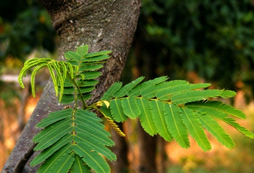

1.ถั่วดินโคก

ชื่อทางวิทยาศาสตร์
-พิษนาศน์ หรือ Sophora exigua Craib
ถิ่นกำเนิด
-ยังไม่เป็นที่เเน่ชัดว่ามีถิ่นกำเนิดดั้งเดิมในบริเวณใดของโลก เเต่ในประเทศไทยนั้นจะพบได้ใน ภาคเหนือเเละภาคอีสาน
ลักษณะทั่วไป
-เป็นไม้พุ่มขนาดเล็ก สูง 15-30 เซนติเมตรใบประกอบเป็นเเบบขนนก ออกเรียงสลับเเนบกับพื้นดิน
ข้อดีของพันธุ์ไม้
-ช่วยบำรุงน้ำนมของสตรี, รักษาแผลอักเสบฝีหนอง, รากนำมาฝนกับน้ำดื่มช่วยลดไข้ในเด็ก
การขยายพันธุ์
-พิษนาศน์สามารถขยายพันธุ์ได้โดยวิธีการใช้เมล็ดแต่จะเป็นพืชที่ค่อนข้างโตช้า ซึ่งในธรรมชาติจะอาศัยฝักแก่ที่ร่วงหล่นและแตกออกมาทำให้เมล็ดด้านในตกสู่ดินแล้วจึงเจริญเติบโตเป็นต้นต่อไป เราสามารถนำเมล็ดของพิษนาศน์มาทำการเพาะปลูกได้ โดยใช้วิธีการเพาะเมล็ดและการปลูกเช่นเดียวกันกับการเพาะเมล็ดและปลูกพืชตระกูลถั่วอื่นๆ
อ้างอิง https://ecency.com/thai/@lbrewster/1b636ac03d074 , http://clgc.agri.kps.ku.ac.th/resources/new-fragrant/cinnamomum.html
2.เทพทาโร
ชื่อทางวิทยาศาสตร์
-Cinnamomum porrectum Kosterm
ถิ่นกำเนิด
-ประเทศไทย (ภาคใต้) มาเลเซีย อินโดนีเซีย
ลักษณะทั่วไป
-ไม้ยืนต้นขนาดกลาง-ใหญ่ สูงประมาณ 10 - 30 เมตร
ข้อดีของพันธุ์ไม้
-เป็นพันธุ์ไม้ที่มีความหอมในทุกๆ ส่วน ตั้งแต่ใบ ดอก ลำต้น ราก
การขยายพันธุ์
- ขยายพันธุ์โดยการปักชำ และเพาะเมล็ด
อ้างอิง http://clgc.agri.kps.ku.ac.th/resources/new-fragrant/cinnamomum.html
3.มะตูมนิ่ม
ชื่อทางวิทยาศาสตร์
-Aegle marmelos
ถิ่นกำเนิด
-เอเชียตะวันออกเฉียงใต้, เอเชียใต้
ลักษณะทั่วไป
ลำต้นมีความสูง 18 เมตร เปลือกลำต้นมีสีเทาเรียบเป็นร่องตื้น เนื้อไม้แข็ง มีสีขาวแกมเหลือง และมีกลิ่นหอม โคนต้นและกิ่งก้านมีหนามแหลม ยาว แข็ง ออกเดี่ยวหรือเป็นคู่ตามกิ่ง
ข้อดีของพันธุ์ไม้
ใช้รับประทานได้ทั้งแบบสดและแบบแห้ง ใบอ่อนและยอดอ่อนใช้รับประทานเป็นผักสลัด เนื้อเละใช้รับประทานเป็นผลไม้ และใช้เป็นยารักษาอาการท้องร่วง ท้องเดิน โรคลำไส้ ตาแห้งไข้หวัดธรรมดา และยังใช้รักษาอาการท้องผูกเรื้อรัง
การขยายพันธุ์
เพาะเมล็ด ตอนกิ่ง สัตว์ป่าบางชนิดช่วยแพร่พันธุ์ได้
อ้างอิง https://th.wikipedia.org/wiki/%E0%B8%A1%E0%B8%B0%E0%B8%95%E0%B8%B9%E0%B8%A1
4.มะหาด

ชื่อทางวิทยาศาสตร์
-Artocarpus lacucha
ถิ่นกำเนิด
-เอเชียใต้
ลักษณะทั่วไป
-เป็นไม้ยืนต้น ขนาดกลาง-ใหญ่
ข้อดีของพันธุ์ไม้
-ต้นมะหาดที่สามารถนำมาใช้ผลประโยชน์ได้นั้นจะต้องมีอายุไม่ต่ำกว่า 5 ปี
ราก -ใช้ลดอาการไข้ แก้กระษัยเส้นเอ็น ขับถ่ายถ่ายพยาธิ แก้พิษร้อน
เปลือก -ใช้ลดอาการไข้
ต้นไม้ -ให้ความร่มรื่น ให้ร่มเงา ป้องกันการพังทลายของหน้าดิน
เนื้อไม้ -ใช้ทำเสา หมอนรองรางรถไฟ สะพาน ด้ามเครื่องมือทางการเกษตร เป็นไม้เนื้อหยาบ แข็ง เหนียวและทนทาน ปลวกและมอดไม่ขึ้น
การขยายพันธุ์
-สามารถขยายพันธุ์ได้ 2 วิธี 1.การเพาะเมล็ด 2.การตอนกิ่ง
อ้างอิง https://th.wikipedia.org/wiki/%E0%B8%A1%E0%B8%B0%E0%B8%AB%E0%B8%B2%E0%B8%94
5.เร่ว

ชื่อทางวิทยาศาสตร์
-Amomum villosum Wall
ถิ่นกำเนิด
-เอเชียตะวันออกเฉียงใต้
ลักษณะทั่วไป
-ใบยาวเรียว ใบเดี่ยว เรียงสลับ รูปขอบขนาน หรือรูปขอบขนานแกมใบหอก กว้าง 4-7 ซม. ยาว 12-20 ซม ปลายใบแหลมและห้อยโค้งลงผิวใบสีเขียวเข้มเป็นมัน
ข้อดีของพันธุ์ไม้
เมล็ดจากผลที่แก่จัด -เป็นยาแก้ท้องขึ้น ท้องอืดเฟ้อ ขับลม, แก้คลื่นเหียนอาเจียน ขับน้ำนมหลังจากคลอดบุตร
ราก -แก้หืด แก้ไอ แก้ไข้เซื่องซึม
ต้น -แก้คลื่นเหียน อาเจียน
ใบ -ขับลม แก้ปัสสาวะพิการ
ดอก -แก้พิษอันเกิดเป็นเม็ดผื่นคันตามร่างกาย
ผล -รักษาโรคริดสีดวงทวาร แก้ท้องอืดเฟ้อ แก้ปวด
การขยายพันธุ์
-ใช้เมล็ด ปักชำ
อ้างอิง https://th.wikipedia.org/wiki/%E0%B9%80%E0%B8%A3%E0%B9%88%E0%B8%A7, http://srdi.yru.ac.th/bcqy/view/353_%E0%B9%80%E0%B8%A3%E0%B9%88%E0%B8%A7.html
6.หัวร้อยรู

ชื่อทางวิทยาศาสตร์
-Hydnophytum formicarum Jack
ถิ่นกำเนิด
-ทวีปเอเชีย มีแหล่งกระจายพันธุ์ในประเทศอินเดียและในภูมิภาคเอเชียตะวันออกเฉียงใต้
ลักษณะทั่วไป
-หัวร้อยรูจัดเป็นพืชจำพวกฝาชนิดมีหัว ซึ่งเป็นไม้ที่อิงอาศัยเกาะตามต้นไม้อื่น ลำต้นสูง 25-60 เซนติเมตร
ข้อดีของพันธุ์ไม้
-ใช้บำรุงหัวใจ, แก้โรคปอด, ช่วยขับชีพจร, แก้ปวดศีรษะ, แก้พิษในข้อในกระดูก, แก้เบาหวาน เป็นต้น
การขยายพันธุ์
-หัวร้อยรูสามารถขยายพันธุ์ได้โดยวิธีการเพาะเมล็ด การปักชำและการตอนกิ่ง แต่วิธีที่จะทำให้เกิดหัวจากการขยายพันธุ์มีเพียงการเพาะเมล็ดเท่านั้น
อ้างอิง https://www.disthai.com/17226055/%E0%B8%AB%E0%B8%B1%E0%B8%A7%E0%B8%A3%E0%B9%89%E0%B8%AD%E0%B8%A2%E0%B8%A3%E0%B8%B9
7.กระทุ่มนา
ชื่อทางวิทยาศาสตร์
-Mitragyna diversifolia
ถิ่นกำเนิด
-จีนตอนใต้ เอเชียตะวันออกเฉียงใต้ไปจนถึงเกาะนิวกินี
ลักษณะทั่วไป
-ต้นสูง8–15เมตร หูใบรูปขอบขนานยาว1–1.5เซนติเมตร ใบเป็นใบเดี่ยวรูปไข่หรือรูปรี ออกเรียงตรงข้ามยาว 5–16เซนติเมตร
ข้อดีของพันธุ์ไม้
-ปลูกเป็นไม้ประดับเพราะดอกมีกลิ่นหอมอ่อนๆ ใบกระทุ่มนามีสรรพคุณแก้ท้องร่วง แก้บิดมูกเลือด เปลือกต้นใช้รักษาโรคผิวหนัง คุดทะราด
การขยายพันธุ์
-เพาะเมล็ดหรือตอนกิ่ง
อ้างอิง https://th.wikipedia.org/wiki/%E0%B8%81%E0%B8%A3%E0%B8%B0%E0%B8%97%E0%B8%B8%E0%B9%88%E0%B8%A1%E0%B8%99%E0%B8%B2
8.ขันทองพยาบาท
ชื่อทางวิทยาศาสตร์
-Suregada multiflora
ถิ่นกำเนิด
-อเชียตะวันออกเฉียงใต้ แถบประเทศอินเดีย พม่า คาบสมุทรอินโดจีน และคาบสมุทรมลายู
ลักษณะทั่วไป
-เป็นไม้ยืนต้นขนาดกลางสูง 7-13 เมตรกิ่งก้านกลมสีเทา เปลือกสีน้ำตาลแก่ ผิวบางเรียบ เนื้อไม้ข้างในมีสีขาว
ข้อดีของพันธุ์ไม้
-แก้ลมพิษ แก้โรคเรื้อน โรคผิวหนังทุกชนิด แก้ไข้ และแก้กามโรค
การขยายพันธุ์
-ขยายพันธุ์ได้โดยการใช้เมล็ด แต่โดยส่วนมากแล้วในอดีตมักจะไม่นิยมนำมาปลูกตามเรือกสานไร่นา หรือตามบริเวณบ้าน เพราะเป็นพันธุ์ไม้ยืนต้นที่มีขนาดสูงใหญ่พอสมควร
อ้างอิง https://th.wikipedia.org/wiki/%E0%B8%82%E0%B8%B1%E0%B8%99%E0%B8%97%E0%B8%AD%E0%B8%87%E0%B8%9E%E0%B8%A2%E0%B8%B2%E0%B8%9A%E0%B8%B2%E0%B8%97
9.จุกโรหินี

ชื่อทางวิทยาศาสตร์
-Dischidia major (Vahl) Merr
ถิ่นกำเนิด
-อินเดีย พม่า ไทย อินโดจีน มาเลเซีย ปาปัวนิวกินี ฟิลิปปินส์ถึงทวีปออสเตรเลีย
ลักษณะทั่วไป
-ลำต้นเล็ก ทุกส่วนมีขนสากปกคลุม
ข้อดีของพันธุ์ไม้
-นำต้นมาต้มน้ำดื่มแก้โรคกระเพาะอาหาร
การขยายพันธุ์
-ปักชำ
อ้างอิง
10.ชะเอมไทย
ชื่อทางวิทยาศาสตร์
-Albizia myriophylla Benth
ถิ่นกำเนิด
-เอเชียตะวันออกเฉียงใต้
ลักษณะทั่วไป
-ไม้เถาขนาดใหญ่ มีหนาม ใบประกอบแบบขนนกสองชั้น ใบเล็กละเอียดเป็นฝอย
ข้อดีของพันธุ์ไม้
-รากแก้กระหายน้ำ ยาระบาย มีรสหวาน ขับเสมหะ แก้ไอ เลือดออกตามไรฟัน โรคในลำคอ แก้ลม ดอกช่วยย่อยอาหาร ผลขับเสมหะ ใบ ขับเลือดให้ตก เนื้อไม้รสหวาน แก้โรคในลำคอ แก้ลม เลือดออกตามไรฟัน บำรุงกำลัง
การขยายพันธุ์
--ปักชำ
อ้างอิง https://th.wikipedia.org/wiki/%E0%B8%8A%E0%B8%B0%E0%B9%80%E0%B8%AD%E0%B8%A1%E0%B9%84%E0%B8%97%E0%B8%A2
11.ชิงชี่

ชื่อทางวิทยาศาสตร์
-Capparis micracantha
ถิ่นกำเนิด
-บังกลาเทศ, จีนตอนใต้และเอเชียตะวันออกเฉียงใต้
ลักษณะทั่วไป
-เป็นไม้พุ่มหรือรอเลื้อย มีหนาม ใบรูปขอบขนาน รูปใบหอกหรือแกมรูปไข่ยาว 10-30 เซนติเมตร
ข้อดีของพันธุ์ไม้
-แก้โรคที่เกิดในท้อง ขับลมภายใน แก้ไข้ร้อนในทุกชนิด ไข้พิษ แก้โรคตา โรคกระเพาะ รักษามะเร็ง
การขยายพันธุ์
-ขยายพันธุ์ด้วยการเพาะเมล็ด ชิงชี่เป็นไม้ประดับที่ปลูกในที่ที่มีแสงแดดและความชื้นปานกลาง
อ้างอิง
12.ตับเต่า

ชื่อทางวิทยาศาสตร์
-Hydrocharis morsus-ranae
ถิ่นกำเนิด
-ทวีปยุโรปและเอเชีย
ลักษณะทั่วไป
-ต้นเจริญเติบโตอยู่ในน้ำ มีรากและสามารถแตกไหลเป็นเส้นสีขาว เกิดเป็นกระจุกทางด้านล่างของกลุ่มใบ ปลายไหลเจริญเติบโตเป็นต้นใหม่ ใบโผล่เหนือน้ำหรือลอยที่ผิวน้ำรูปหัวใจหรือรูปไข่กว้าง 2.5–7.5 เซนติเมตรยาว 2.5–6 เซนติเมตร
ข้อดีของพันธุ์ไม้
-ต้นอ่อนใช้รับประทานเป็นผัก สามารถใช้แก้ลม แก้เสมหะ บำรุงธาตุไฟให้บริบูรณ์ ใช้เป็นไม้ประดับหรือปลูกในบ่อเลี้ยงปลาเพื่อช่วยคลุมผิวน้ำ
การขยายพันธุ์
-ขยายพันธุ์โดยวิธีการแตกไหล หรือใช้เมล็ด
อ้างอิง https://th.wikipedia.org/wiki/%E0%B8%95%E0%B8%B1%E0%B8%9A%E0%B9%80%E0%B8%95%E0%B9%88%E0%B8%B2%E0%B8%99%E0%B8%B2
13.นางแย้มป่า

ชื่อทางวิทยาศาสตร์
-Clerodendrum viscosum Vent
ถิ่นกำเนิด
-ถิ่นกำเนิดในประเทศไทยแล้วมีการแพร่กระจายพันธุ์ไปยังบริเวณเขตร้อนใกล้เคียง เช่น อินเดีย ฟิลิปปินส์ อินโดนีเซีย มาเลเซีย เป็นต้น
ลักษณะทั่วไป
-เป็นไม้พุ่มขนาดย่อม มีความสูงของต้นประมาณ 0.5-4 เมตร ลำต้นตั้งเป็นสันสี่เหลี่ยมตรงแต่ไม่มีขนปกคลุม
ข้อดีของพันธุ์ไม้
-ใช้แก้ลำไส้อักเสบ ไตพิการ ขับปัสสาวะ แก้ไข้ ขับระดูในสตรี แก้ปวดข้อ แก้เหน็บชา โดยใช้รากแห้งมาต้มกับน้ำดื่มใช้แก้ปวดเอว ปวดข้อ แก้กระดูกสันหลังอักเสบ
การขยายพันธุ์
-ใช้เมล็ด การตอนกิ่งและการปักชำกิ่ง
อ้างอิง https://www.disthai.com/17198506/%E0%B8%99%E0%B8%B2%E0%B8%87%E0%B9%81%E0%B8%A2%E0%B9%89%E0%B8%A1%E0%B8%9B%E0%B9%88%E0%B8%B2
14.ปลาไหลเผือก

ชื่อทางวิทยาศาสตร์
-Eurycoma longifolia jack
ถิ่นกำเนิด
-เอเชียตะวันออกเฉียงใต้ที่มีปริมาณน้ำฝนต่อปีมาก หรือแถบเส้นศูนย์สูตรและเขตร้อนชื้น เช่น ไทย มาเลเซีย อินโดนีเซีย พม่า ลาว กัมพูชา เป็นต้น
ลักษณะทั่วไป
-รากเป็นสีขาว มีลักษณะยาวคล้ายปลาไหลเผือก จึงเรียกกันว่าปลาไหลเผือก อีกทั้งยังมีเพียงรากเดียว
ข้อดีของพันธุ์ไม้
-นำมาต้มกับน้ำดื่มก่อนอาหารวันละ 2 ครั้ง เช้าและเย็น ต้านโรคมะเร็ง รักษาโรคอัมพาต ช่วยขับถ่ายน้ำเหลือง ขับพยาธิ แก้อาการท้องผูก แก้ต่อมทอนซิลอักเสบ แก้อาการเจ็บคอ แก้วัณโรค
การขยายพันธุ์
-ขยายพันธุ์ได้ด้วยวิธีการใช้เมล็ด และวิธีการตอนกิ่ง และจัดเป็นพรรณไม้กลางแจ้งที่ต้องการน้ำและความชื้นสูง
อ้างอิง https://www.disthai.com/16661536/%E0%B8%9B%E0%B8%A5%E0%B8%B2%E0%B9%84%E0%B8%AB%E0%B8%A5%E0%B9%80%E0%B8%9C%E0%B8%B7%E0%B8%AD%E0%B8%81
15.พังคี
ชื่อทางวิทยาศาสตร์
-Croton crassifolius Geiseler
ถิ่นกำเนิด
-สามารถพบได้ทางตอนใต้ของประเทศจีน และในภูมิภาคเอเชียตะวันออกเฉียงใต้
ลักษณะทั่วไป
-ไม้พุ่ม (Shrub) สูงประมาณ 1 เมตรส่วนที่อ่อนตามกิ่ง ใบและช่อดอกมีขนรูปดาวสีขาวครีม ใบเดี่ยว รูปไข่ รูปรี หรือรูปหอก ยาว 7-20 เซนติเมตร กว้าง 4-9 เซนติเมตร
ข้อดีของพันธุ์ไม้
-รากใช้ทำยาแก้ไข้ โดยผสมกับสมุนไพรชนิดอื่นอีก 34 ชนิด ใช้ต้มกับน้ำดื่มแก้ไข้ ช่วยแก้อาการจุกเสียด แก้ท้องอืด ท้องขึ้น ท้องเฟ้อ ปวดท้อง ปวดแน่นท้อง ด้วยการใช้รากต้มกับน้ำดื่ม
การขยายพันธุ์
-ขยายพันธุ์ได้ด้วยวิธีการใช้เมล็ด
อ้างอิง https://home.kku.ac.th/orip2/thaiherbs/index.php/2013-05-04-04-14-43/30-2013-05-07-09-37-06
16.มะคังแดง

ชื่อทางวิทยาศาสตร์
-Gardenia erythroclada Kurz
ถิ่นกำเนิด
-เอเชียตะวันออกเฉียงใต้
ลักษณะทั่วไป
-เป็นไม้ยืนต้น กึ่งไม้พุ่มขนาดกลาง สูง 6-12 เมตร ใบดกหนาทึบ
ข้อดีของพันธุ์ไม้
-เปลือกต้น เข้ายากับมุ่ยขาว ทำเป็นลูกกลอน แก้ปวดเส้นเอ็น อัมพฤกษ์ อัมพาต แก้ริดสีดวงทวาร
การขยายพันธุ์
-ขยายพันธุ์ได้ด้วยวิธีการใช้เมล็ด
อ้างอิง http://www.phargarden.com/main.php?action=viewpage&pid=91
17.สะค้าน

ชื่อทางวิทยาศาสตร์
-Piper ribesoides Wall
ถิ่นกำเนิด
-พบได้ในทุกภาคของประเทศไทย ที่มีสภาพป่าดิบชื้น
ลักษณะทั่วไป
-ไม้เถาเลื้อย ลำต้นอวบอ้วนขนาดใหญ่ ทุกส่วนเกลี้ยง รูปทรงและขนาดของใบพบได้หลากหลาย เนื้อใบเหนียวและหนามาก ใบบนลำต้นมีขนาดเล็กกว่ามาก
ข้อดีของพันธุ์ไม้
-แก้ลมอัมพฤกษ์ แก้ลมในทรวงอก ขับลมในลำไส้ ใช้เป็นยาบำรุงกำลัง แก้ไข้ แก้หืด แก้จุดเสียด
การขยายพันธุ์
-เป็นพันธุ์ไม้ป่า ขึ้นได้ดีในดินร่วนซุย ระบายน้ำดี มีแสงรำไร ชอบเกาะตามต้นไม้ขนาดใหญ่ จึงไม่นิยมนำมาเพาะพันธุ์เพราะมักจะตายง่าย
อ้างอิง https://www.disthai.com/16488299/%E0%B8%AA%E0%B8%B0%E0%B8%84%E0%B9%89%E0%B8%B2%E0%B8%99
18.สารภีป่า

ชื่อทางวิทยาศาสตร์
-Anneslea fragrans Wall
ถิ่นกำเนิด
-ประเทศไทย
ลักษณะทั่วไป
-ไม้ต้นสูง 5-15 เมตร ใบเดี่ยวเรียงเวียนรูปหอก หรือรูปหอกแกมขอบขนานยาว 7-15 เซนติเมตรกว้าง 2.5-5 เซนติเมตรฐานรูปลิ่มปลายแหลมมีน้อยที่กลมหรือมนก้านใบ 2-3 เซนติเมตร
ข้อดีของพันธุ์ไม้
-ที่อยู่อาศัย,เนื้อไม้ใช้ทำเครื่องเรือนได้ดี
การขยายพันธุ์
-ขยายพันธุ์ได้ด้วยวิธีการใช้เมล็ด และวิธีการตอนกิ่ง
อ้างอิง http://biodiversity.forest.go.th/index.php?option=com_dofplant&view=showone&id=627
19.อบเชยไทย

ชื่อทางวิทยาศาสตร์
-Cinnamomum spp
ถิ่นกำเนิด
-จีน อินเดีย เนปาล พม่า ไทย ลาว เวียดนาม ภูฏาน บังกลาเทศ
ลักษณะทั่วไป
-อบเชยมีอยู่หลายชนิดซึ่งคุณภาพแตกต่างกันไป ตามสถานที่ปลูกหรือแหล่งผลิต ส่วนที่นำมาใช้เช่นเปลือกของใบและกิ่งก้าน แต่สรรพคุณทางยาจะใช้เหมือนกันหมด
ข้อดีของพันธุ์ไม้
-อบเชยมีฤทธิ์อุ่นร้อน มีรสหอมหวาน ช่วยขับเหงื่อ ให้ความสดชื่น แก้อาการอ่อนเพลีย น้ำมันอบเชยเทศใช้เป็นส่วนผสมในยาขับลม แก้อาการท้องอืดท้องเฟ้อ มีฤทธิ์ฆ่าเชื้อราและเชื้อจุลินทรีย์ แต่มีผลข้างเคียงคือก่อให้เกิดความระคายเคืองมากกว่าน้ำมันอบเชยเทศ
การขยายพันธุ์
-ขยายพันธุ์ได้ด้วยวิธีการใช้เมล็ด และวิธีการตอนกิ่ง
20.เฉียงพร้านางแอ

ชื่อทางวิทยาศาสตร์
-Carallia brachiata (Lour.) Merr
ถิ่นกำเนิด
-เขตร้อนของทวีปแอฟริกาบริเวณเกาะมาดากัสการ์
ลักษณะทั่วไป
-เฉียงพร้านางแอ จัดเป็นไม้ยืนต้นขนาดกลางถึงขนาดใหญ่ไม่ผลัดใบ สูง 25-30 เมตร เรือนยอดทึบทรงพุ่มมีขนาด 6-8 เมตร รูปกรวยกว้าง ลำต้นตั้งตรง ผิวเรียบ เปลือกสีน้ำตาลอมแดงถึงน้ำตาลอมเทา มีรูอาการมาก
ข้อดีของพันธุ์ไม้
-ใช้แก้โลหิตปิดธาตุ แก้ไข้ ช่วยขับเสมหะ แก้ร้อนในกระหายน้ำ แก้บิด ช่วยสมานแผล แก้พิษผิดสำแดง
การขยายพันธุ์
-สามารถขยายพันธุ์ได้โดยการใช้เมล็ด
อ้างอิง https://www.disthai.com/17229595/%E0%B9%80%E0%B8%89%E0%B8%B5%E0%B8%A2%E0%B8%87%E0%B8%9E%E0%B8%A3%E0%B9%89%E0%B8%B2%E0%B8%99%E0%B8%B2%E0%B8%87%E0%B9%81%E0%B8%AD
21.เถาเอ็นอ่อน

ชื่อทางวิทยาศาสตร์
-Cryptolepis buchanani Roem. & Schult
ถิ่นกำเนิด
-เอเชียตะวันออกเฉียงใต้
ลักษณะทั่วไป
-จัดเป็นไม้เถาเลื้อยพาดพันกับต้นไม้อื่น เป็นไม้เลื้อยจำพวกเถาเนื้อแข็ง ใบเป็นใบเดี่ยว ออกเรียงตรงข้ามกัน ลักษณะของใบเป็นรูปรีหรือรูปไข่ ปลายใบมนมีหางสั้น โคนใบสอบ ส่วนขอบใบเรียบ
ข้อดีของพันธุ์ไม้
-มีฤทธิ์แก้เคล็ดขัดยอก ฤทธิ์ต้านการอักเสบ ฤทธิ์แก้ปวด ฤทธิ์บำรุงข้อ ฤทธิ์บำรุงตับ
การขยายพันธุ์
-ขยายพันธุ์โดยการเพาะเมล็ดและการใช้เถาปักชำ
อ้างอิง
22.เปราะหอม

ชื่อทางวิทยาศาสตร์
-Kaempferia galanga L
ถิ่นกำเนิด
-ในทวีปเอเชียโดยมีเขตการกระจายพันธุ์ตั้งแต่ประเทศอินเดีย ประเทศในเอเชียตะวันออกเฉียงใต้
ลักษณะทั่วไป
-จัดเป็นไม้ลงหัวหรือพืชล้มลุก มีลำต้นใต้ดินประเภทไรโซม (Rhizome) ลักษณะเป็นเหง้าแง่งกลมรูปไข่สีเหลืองอ่อนมีเยื่อบาง ๆ รูปสามเหลี่ยมหุ้มโคน เหง้าแก่สีน้ำตาล
ข้อดีของพันธุ์ไม้
-แก้หวัดคัดจมูก ขับลมในลำไส้ แก้เสมหะ เจริญไฟธาตุ แก้ลงท้อง แก้ท้องเฟ้อ แก้โลหิตซึ่งเจือด้วยลมพิษ
การขยายพันธุ์
-สามารถขยายพันธุ์โดยการใช้เหง้า หรือหัวซึ่งเปราะหอมขยายพันธุ์คล้ายกับกระชาย
อ้างอิง https://www.disthai.com/17063057/%E0%B9%80%E0%B8%9B%E0%B8%A3%E0%B8%B2%E0%B8%B0%E0%B8%AB%E0%B8%AD%E0%B8%A1